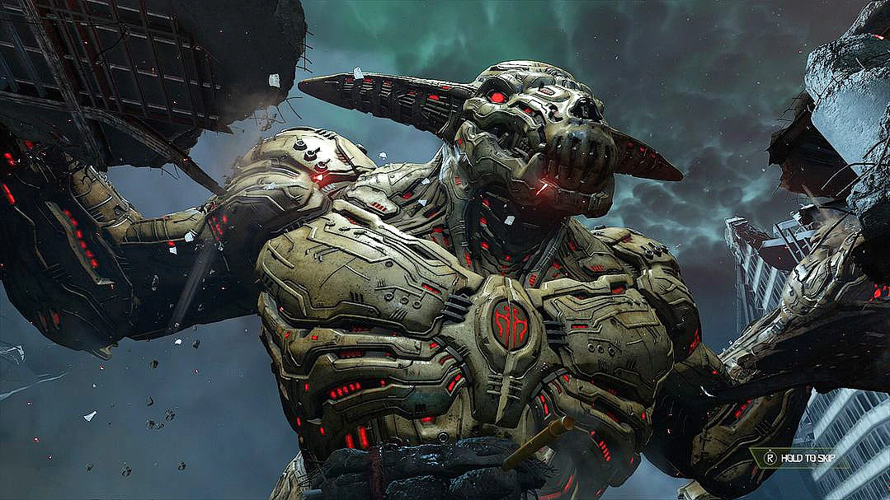
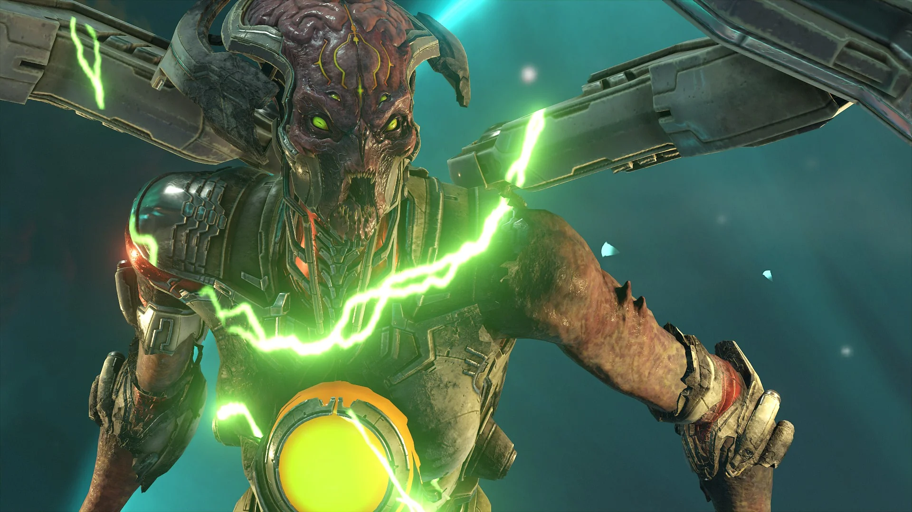
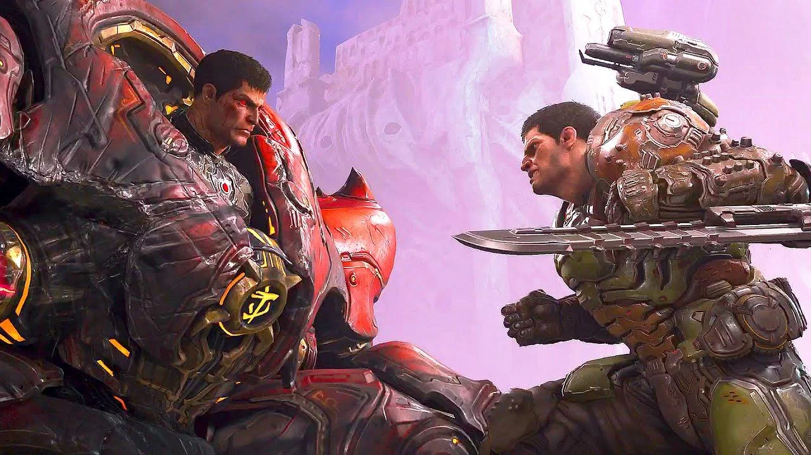

Doom Slayer es un guerrero imparable cuya furia ha aterrorizado a las legiones del infierno durante eras. Antaño, un humano común, su sed de venganza y su destreza en combate, lo llevaron a convertirse en una fuerza imparable contra las hordas demoníacas. Atrapado en un ciclo eterno de destrucción, fue bendecido (o maldito) con un poder sobrehumano tras ser probado en los fuegos del infierno y dotado con la legendaria armadura Pretoriana.
Grandes enemigos derrotados:

Icono del pecado
Es una entidad demoniaca extremadamente poderosa, capaz de causar una destruccion a gran escala para la tierra

Khan Maykr
Es la gobernante suprema de los Maykr, una raza antigua de seres anegelicales, tiene pactos con el señor oscuro del infierno y tiene alizas con ellos

EL señor oscuro (Davoth)
Es una entidad primordial, es el creador del infierno y la fuente del poder demoniaco y es la contraparte oscura del doom Slayer